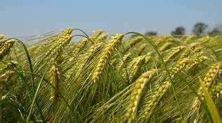
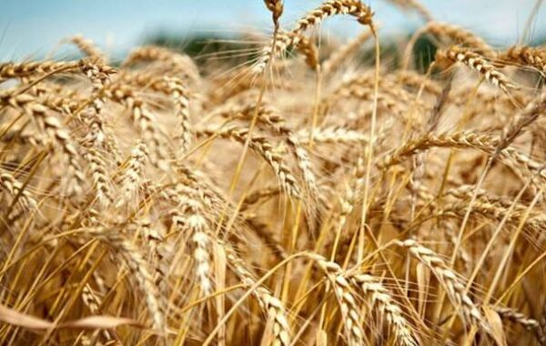
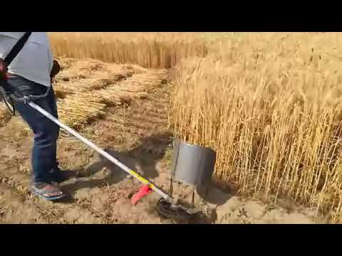
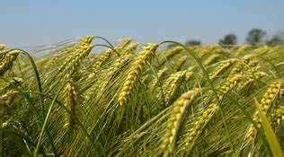
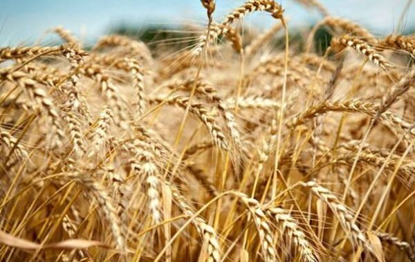
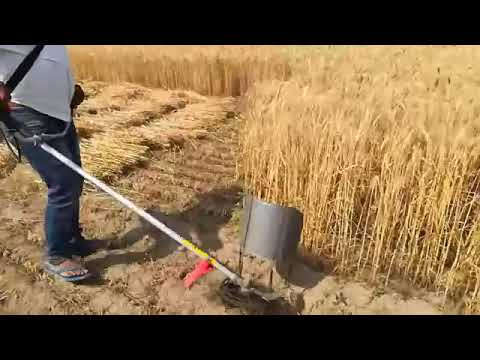

गेंहू का पौधा एक शीतोष्ण जलवायु का पौधा है | नम व गर्म जलवायु में इसके पौधों की वृद्धि व विकास नही हो पाती है | इसके बीजों के अंकुरण के लिए 3.5-5.5 – 20-25 डिग्री सेंटीग्रेट तापमान उपयुक्त होता है | विश्व में गेंहू 25-40 से 33-60 डिग्री सेंटीग्रेट तापमान पर सफलतापूर्वक उगाया जाता है | गेंहू की बुवाई हेतु उचित जल निकास वाली दोमट भूमि उपयुक्त होती है | सिंचाई की सुविधा होने पर बलुई दोमट व मटियार दोमट में भी सफलतापूर्वक गेंहू की खेती की जा सकती है | गेंहू के खेत में बुवाई के माह भर पहले 200-300 कुंतल प्रति हेक्टेयर गोबर की सड़ी खाद खेत में बराबर बिखेर देना चाहिए | बुआई अक्टूबर - नवम्बर ,30-40 kg पर बीघे ,लगातार धान-गेहूँ फसल चक्र वाले क्षेत्रों में कुछ वर्षों बाद गेहूँ की पैदावार में कमी आने लगती है। अतः ऐसे क्षेत्रों में गेहूँ की फसल कटने के बाद तथा धान की रोपाई के बीच हरी खाद का प्रयोग करें अथवा धान की फसल में 10-12 टन प्रति हक्टेयर गोबर की खाद का प्रयोग करें। अब भूमि में जिंक की कमी प्रायः देखने में आ रही है। गेहूँ की बुआई के 20-30 दिन के मध्य में पहली सिंचाई के आस-पास पौधों में, पहली सिंचाई – क्राउन रूट-बुआई के 20-25 दिन बाद फसल में गाभा के समय और दानो में दूध भरने के समय सिंचाई करनी चाहिए ।